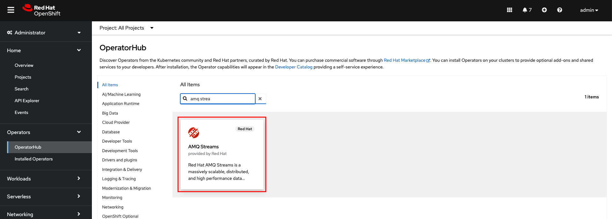
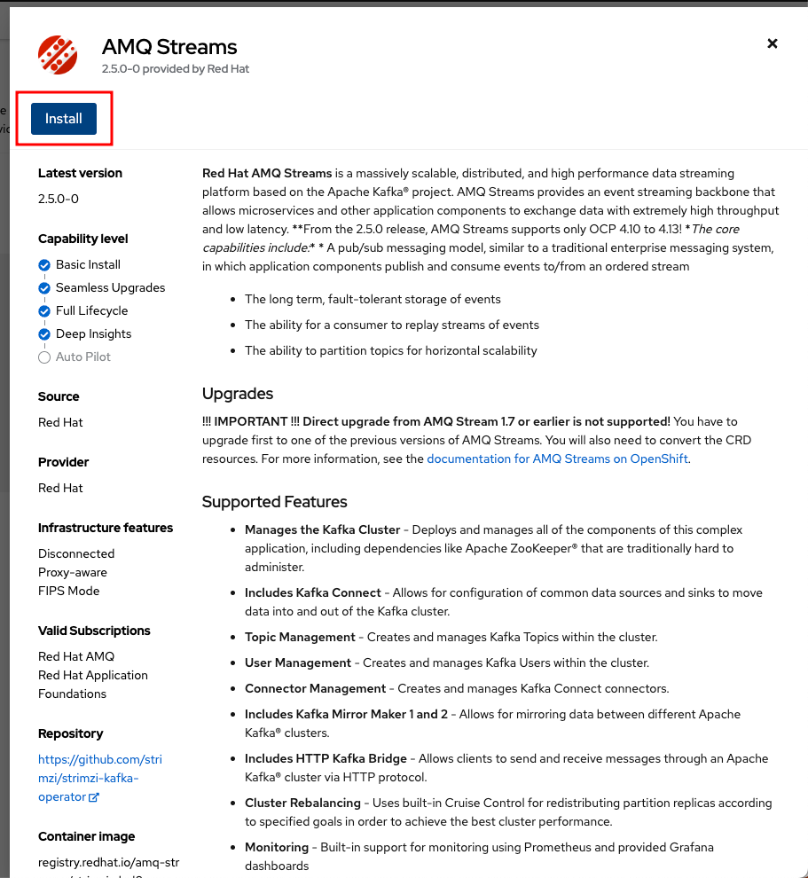
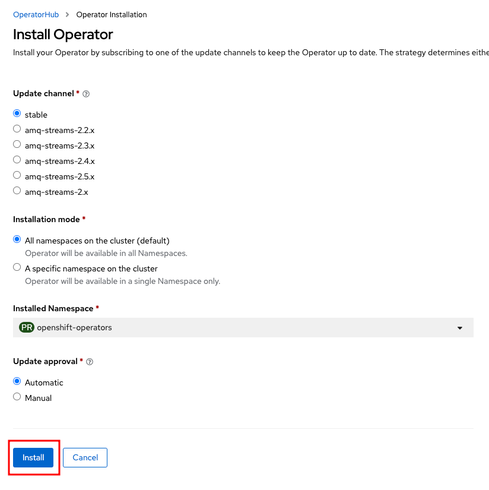
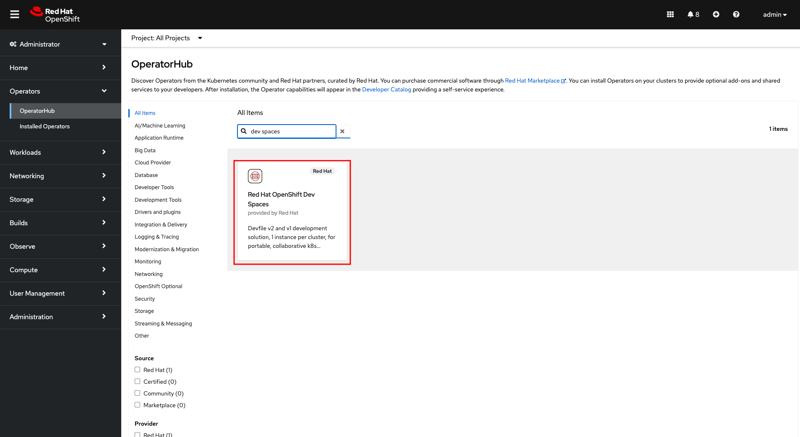
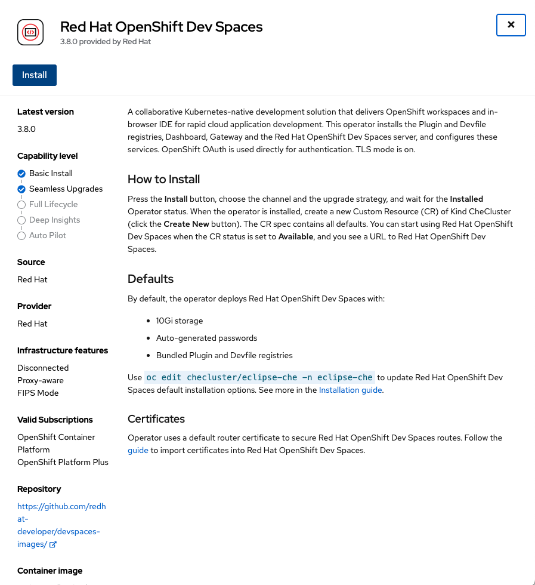
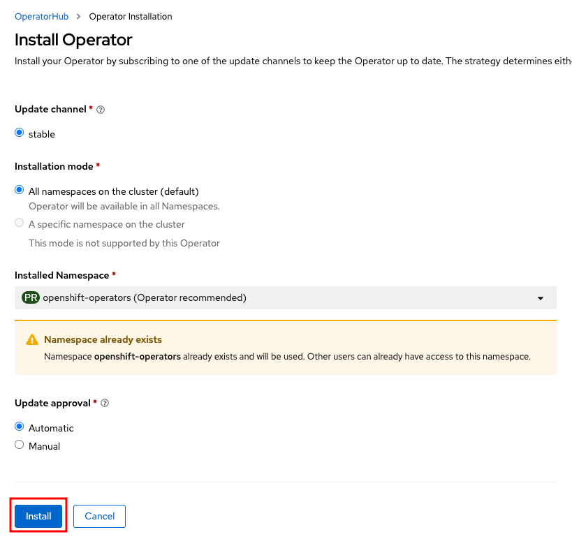
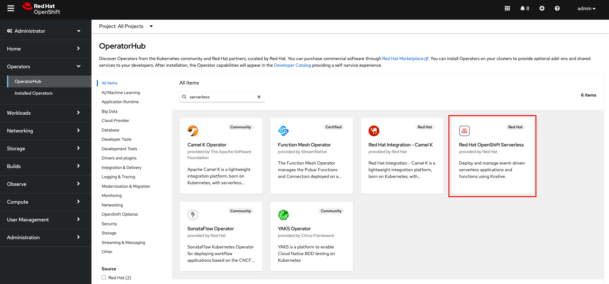
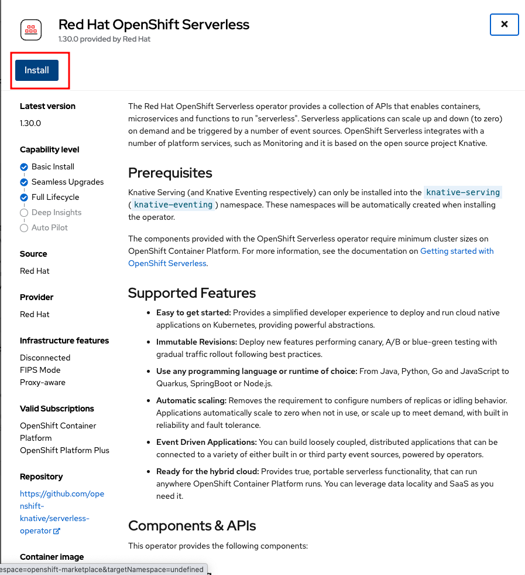
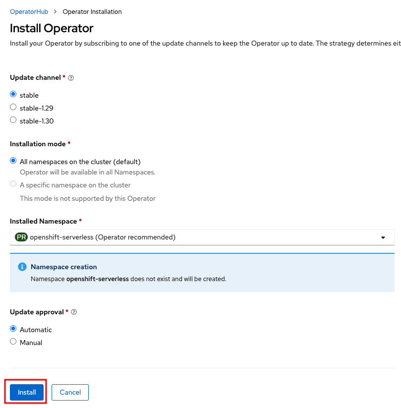

Install and Configure the operators¶
source: https://github.com/maarten-vandeperre/knative-serverless-example-workshop/tree/main/tutorial
AMQ Streams - Install Operator¶
- Step 1
 - Step 2
 - Step 3 (Keep default configurations)
 - Wait until the resources are provisioned and the operator is in a ready state (this can take some minutes).
Dev Spaces - Install Operator¶
- Step 1
 - Step 2
 - Step 3 (Keep default configurations)

OpenShift Serverless (Knative) - Install Operator¶
- Step 1
 - Step 2
 - Step 3 (Keep default configurations)
